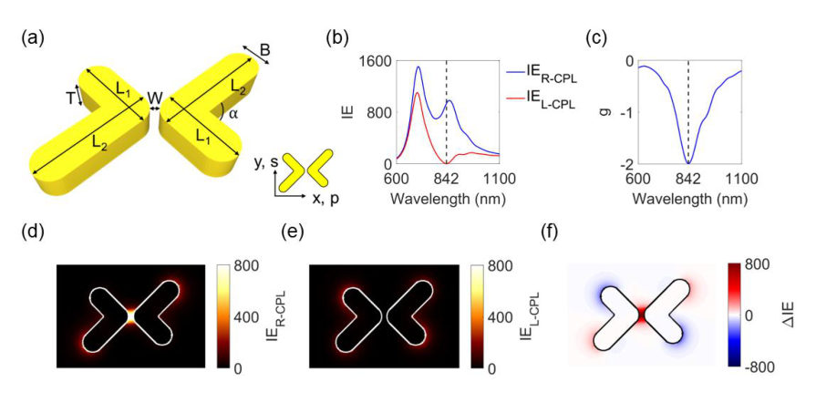
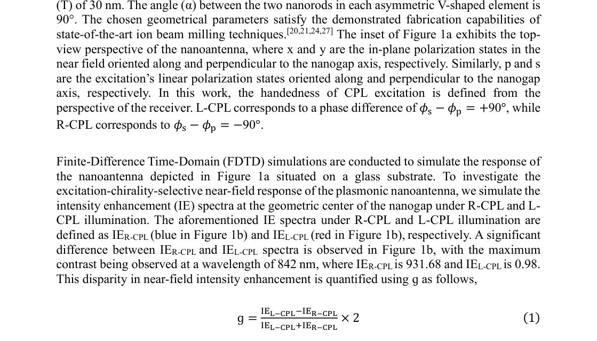
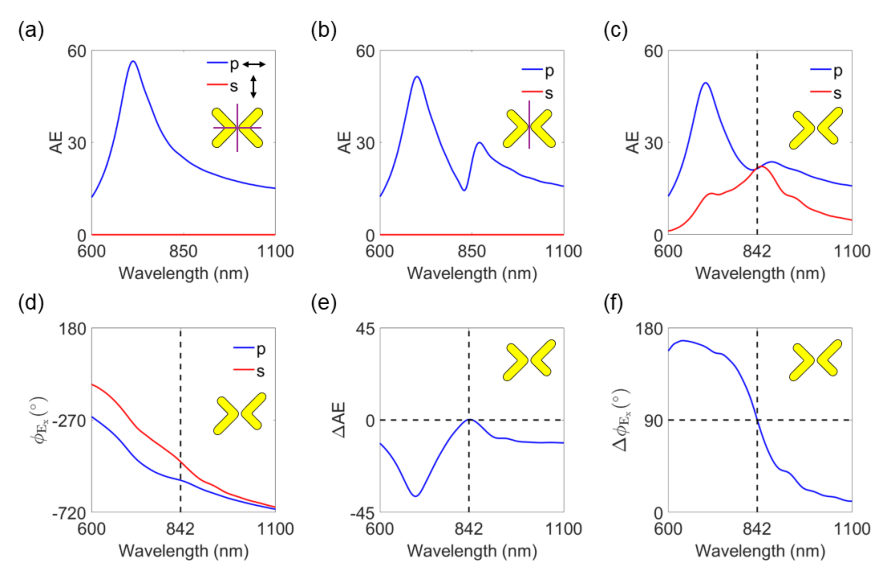

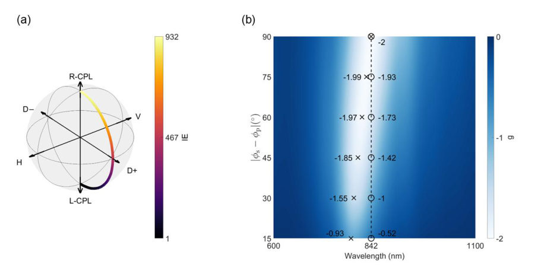
← Index · ← Previous · Next →
Authors: Abhik Chakraborty, Xiaofei Wu, Ankit Kumar Singh, Fabian Scheidler, Min Jiang, Jürgen Popp, Bert Hecht, Jer-Shing Huang
Type: theory · Category: other · PDF: https://arxiv.org/pdf/2605.05065v1
Analysis basis: full PDF text, analyzed in chunks
Topic relevance: interference shaping light 3/5




Summary. The paper presents a design for a chiral plasmonic nanoantenna that allows for the active switching of electromagnetic hot spots using circularly polarized light. By controlling the light's handedness and ellipticity, researchers can modulate the near-field intensity by up to 100%. This architecture also enables the generation of nearly perfectly circularly polarized light from embedded quantum emitters.
Why it may be interesting. This work is highly relevant to quantum optics as it provides a method for engineering the spin-state of light-matter interaction at the nanoscale, specifically for creating scalable, nanoscale circularly polarized single-photon sources.
Main problem. The need for active, deterministic control over light-matter interaction at the nanoscale, specifically moving beyond passive sensing to active near-field switching and modulation of plasmonic hot spots.
Main result. A planar chiral nanoantenna was designed to switch a plasmonic hot spot 'on' or 'off' by changing the handedness of circularly polarized light, and to generate highly circularly polarized emission from an embedded quantum emitter.
Method. 3D electromagnetic simulations using the Finite-Difference Time-Domain (FDTD) algorithm with a 1 nm spatial mesh resolution.
Model / system. A planar chiral plasmonic nanoantenna consisting of two asymmetric V-shaped gold elements with a 10 nm nanogap, placed on a glass substrate, potentially hosting a dipolar quantum emitter.
Key observables. Intensity Enhancement (IE), near-field dissymmetry factor (g), Degree of Circular Polarization (DoCP), and Amplitude Enhancement (AE).
Important parameters / regimes. Wavelength of 842 nm, nanogap width of 10 nm, and numerical aperture (NA) up to 0.9.
Assumptions / limitations. The study assumes a monocrystalline gold structure and uses a simplified dipole model for the quantum emitter.
Figures summary. Figure 1 shows the antenna geometry, intensity enhancement spectra, and spatial distribution of the near-field; Figure 2 details the design criteria and modal interference; Figure 3 uses a Poincare sphere to show continuous modulation; Figure 4 shows the degree of circular polarization spectra.
Paper structure. The paper introduces the problem of active near-field control, describes the chiral nanoantenna geometry, presents the numerical results for hot spot switching and modulation, analyzes the underlying modal interference mechanisms, and demonstrates the application to circularly polarized single-photon emission.
A planar chiral plasmonic nanoantenna exhibiting an excitation-chirality-dependent hot spot in a nanogap is numerically investigated. Additionally, the underlying design principles are examined, providing a broadly applicable framework for engineering chiral nanoantennas through controlled geometrical or modal asymmetry. The hot spot can be turned on and off by changing the handedness of the exciting circularly polarized light (CPL). This effect stems from the rationally designed interference of plasmonic modes excited by the linearly polarized orthogonal components of CPL. The hot spot exhibits maximal near-field dissymmetry factor (about -2) at a wavelength of 842 nm. The intensity at the hot spot can also be continuously modulated by varying the excitation ellipticity and handedness, approaching a modulation depth of 100%. These attributes enable chirality- and ellipticity-dependent switching and dynamic modulation of the plasmonic near field. Moreover, placing a quantum emitter in the gap generates almost perfectly circularly polarized emission, offering a simple yet effective avenue to realize nanoscale circularly polarized single-photon sources.
Authors: N. Mahashri, Andrew L. Krause, M. Chandru, Thomas E. Woolley
Type: theory · Category: statistical mechanics · PDF: https://arxiv.org/pdf/2605.05063v1
Analysis basis: full PDF text, analyzed in chunks
Topic relevance: correlated / nonlocal dissipation 2/5 · driven-dissipative phase transition 2/5 · non-equilibrium dynamics 2/5 · non-equilibrium universality 1/5
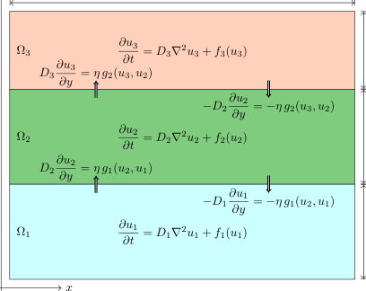
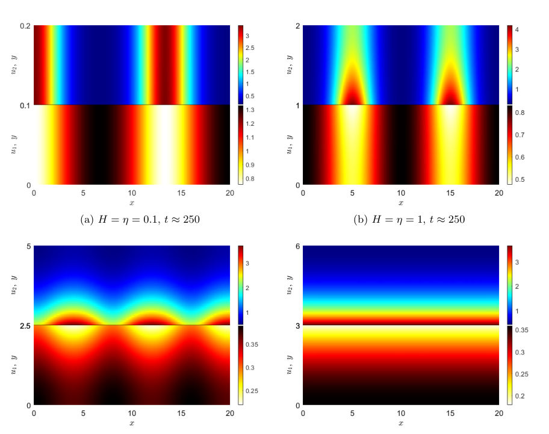
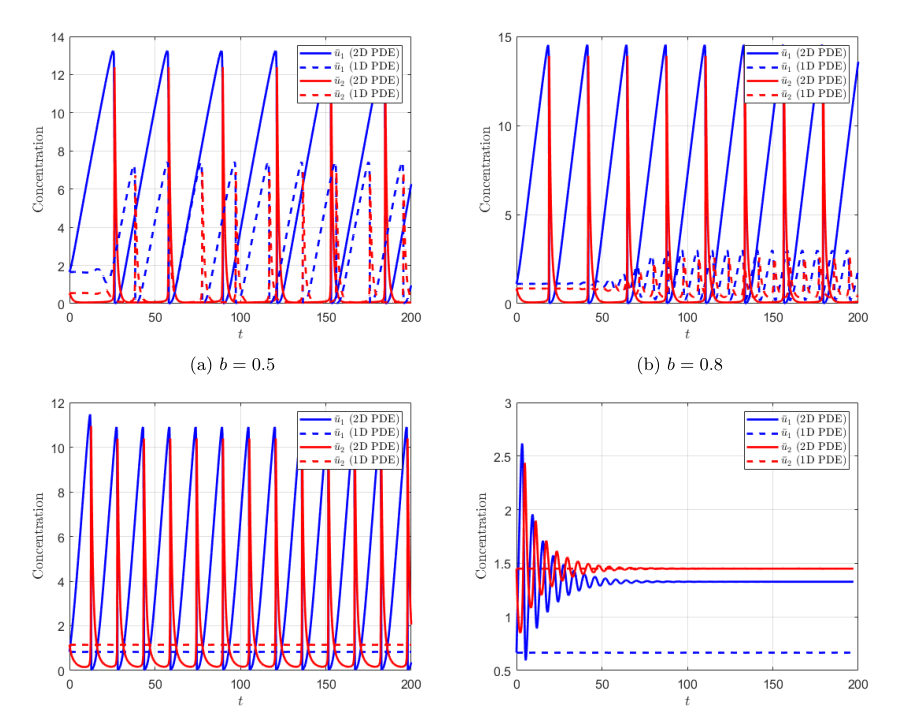
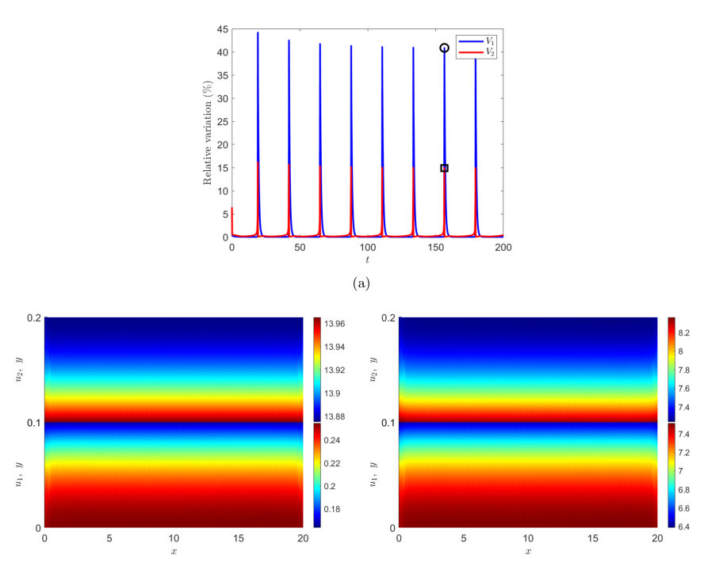
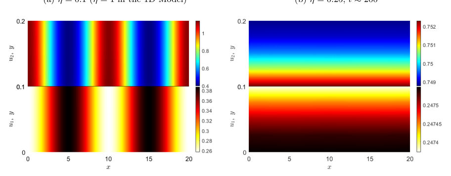
Summary. This paper shows that a single morphogen can create complex spatial and temporal patterns if it moves through a layered medium with nonlinear coupling. By using a thin-layer approximation, the authors prove that reactive interfacial coupling acts like additional chemical species, enabling Turing and Hopf instabilities.
Why it may be interesting. The mechanism of using spatial heterogeneity and nonlinear coupling to induce instabilities in a single-species system provides insights into how complex, emergent many-body dynamics can arise from simple, single-component constituents.
Main problem. Investigating how a single morphogen in a multi-layered 2D medium can generate complex spatiotemporal patterns like Turing, Hopf, and Turing-wave instabilities, which are typically impossible in single-species scalar reaction-diffusion systems.
Main result. The authors demonstrate that nonlinear, reactive coupling between layers can drive pattern formation, effectively acting as additional dynamical degrees of freedom that broaden the class of systems exhibiting complex behavior.
Method. The study uses thin-domain asymptotic reduction to simplify the 2D model into a 1D N-component system, followed by linear stability analysis and numerical verification using the Finite Element Method.
Model / system. A multi-layered 2D reaction-diffusion system where a single species diffuses through N vertically arranged layers, coupled via nonlinear, flux-conserving boundary conditions at the interfaces.
Key observables. Spatial averages of concentration, oscillation amplitudes, waveform shapes, vertical gradients, and kymographs of concentration evolution.
Important parameters / regimes. Layer height (H), coupling strength (eta), diffusion coefficients (Di), and reaction kinetics (f_i, g_i).
Assumptions / limitations. The thin-layer reduction assumes H approaches zero and that solutions/nonlinearities are sufficiently smooth; the 1D model neglects vertical gradients.
Figures summary. Figure 1 shows the multi-layer model geometry; Figure 2 shows 2D simulations of pattern transitions; Figure 3 compares 1D and 2D temporal dynamics; Figure 4 shows 2D Hopf dynamics and vertical gradients; Figure 5 shows parameter sweeps of coupling strength; Figures 7-9 show wave propagation, kymographs, and dispersion relations.
Paper structure. The paper introduces the problem of single-species patterning, presents the multi-layer 2D model, derives a reduced 1D model via thin-layer asymptotics, performs linear stability analysis to identify instability drivers, validates the reduction with 2D numerical simulations, and explores various dynamical regimes (Turing, Hopf, Turing-wave).
Spatial and temporal pattern formation in reaction-diffusion systems is typically studied with two or more equations, as scalar reaction-diffusion equations confined to convex domains do not admit stable inhomogeneous states in time or space on long timescales. Here, we show that a single morphogen diffusing across layered two-dimensional media, with nonlinear coupling between layers, is able to generate stable patterns in time and space. This $N$-layer model is analysed via a thin-domain limit, which reduces to an $N$-component reaction-diffusion system on a homogeneous one-dimensional domain. This reduced model can be analysed via linear stability techniques, showing that non-diffusive, or reactive, coupling between regions is necessary for pattern-forming instabilities, at least in the reduced model. This reduced system can exhibit Turing, Hopf, and Turing-wave instabilities, with emergent structures that are numerically shown to persist even away from the thin-domain regime of the full 2D single-morphogen system. These results suggest that heterogeneous stratification and nonlinear coupling can broaden the class of systems which exhibit complex spatiotemporal behaviours, which may be relevant in scenarios where only a single morphogen is known to act.
Authors: Zheng-Yang Zhuang, Jin-Xin Hu, Song-Bo Zhang, Lun-Hui Hu, Zhongbo Yan
Type: theory · Category: strongly correlated electrons · PDF: https://arxiv.org/pdf/2605.05205v1
Analysis basis: full PDF text, analyzed in chunks
Topic relevance: non-equilibrium dynamics 2/5
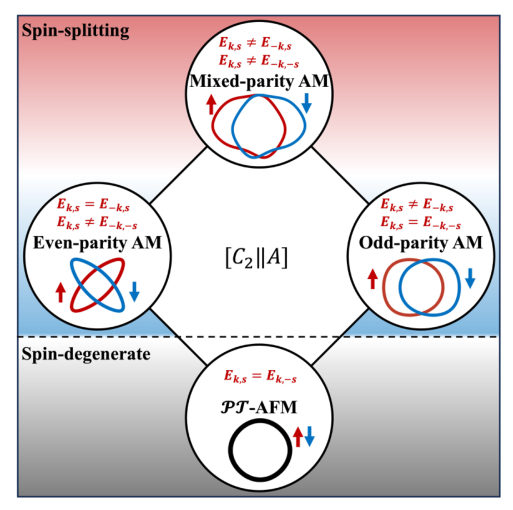
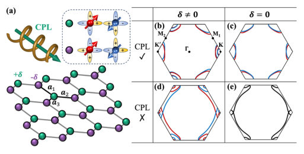
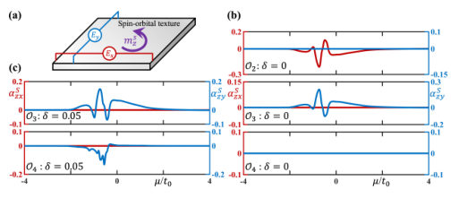
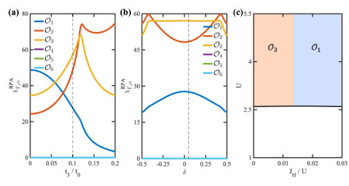
Summary. This paper identifies a new class of mixed-parity altermagnetism that bridges the gap between even- and odd-parity spin-splitting. It shows that this state can be actively manipulated using external tools like electric fields and circularly polarized light in spin-orbital magnets.
Why it may be interesting. not directly relevant
Main problem. The paper investigates the existence and symmetry conditions of a 'mixed-parity' altermagnetism regime, which lies between the traditionally known even- and odd-parity spin-splitting forms.
Main result. The authors demonstrate that mixed-parity altermagnetism can emerge in collinear spin-orbital magnets, acting as an intermediate regime between even- and odd-parity states, and can be controlled via staggered potentials and circularly polarized light.
Method. The study employs spin-space group theory for symmetry analysis, Floquet theory for periodic driving, and the Random-Phase Approximation (RPA) to analyze magnetic instabilities.
Model / system. A two-sublattice, two-orbital, two-spin (eight-band) Hamiltonian on a 2D hexagonal lattice, specifically focusing on collinear spin-orbital magnets with zero net magnetization.
Key observables. Spin-resolved ARPES (spin-splitting symmetry) and spin-resolved orbital Edelstein effects (SOEE).
Important parameters / regimes. Staggered sublattice potential (delta), light helicity (eta), and spin-orbital order parameters (O1 through O6).
Assumptions / limitations. The analysis assumes a high-frequency off-resonant regime for the Floquet-driven system and focuses on the collinear magnetic limit.
Figures summary. Figure 1 classifies collinear antiferromagnets by symmetry; Figure 4 illustrates the symmetry-dependent Orbital Edelstein Effect (OEE) in different spin-orbital phases under varying staggered potentials.
Paper structure. The paper begins by defining the mixed-parity problem, establishes symmetry conditions using group theory, introduces a microscopic two-orbital model, analyzes the effects of driving with circularly polarized light, and concludes with experimental probes like the orbital Edelstein effect.
Altermagnetism has so far mainly been understood in its even- and odd-parity forms. We show that collinear antiferromagnets with zero net magnetization can also host mixed-parity spin splitting, namely neither purely even nor purely odd in momentum. We identify the symmetry conditions for such mixed-parity altermagnetism and show that, in two dimensions, it can arise in spin-orbital magnets when the two antiparallel spin sectors are related by a single mirror symmetry. Using a two-sublattice two-orbital model, we demonstrate that circularly polarized light induces mixed-parity altermagnetism at finite staggered potential and odd-parity spin-orbital altermagnetism at zero staggered potential. Mixed-parity altermagnetism thereby emerges as the intermediate spin-split regime between even- and odd-parity altermagnetism when spin splitting and zero net magnetization are maintained. Spin-resolved orbital Edelstein effects provide a complementary electrical probe of the underlying spin-orbital order.
Authors: Koki Mizuno
Type: theory · Category: disordered systems and neural networks · PDF: https://arxiv.org/pdf/2605.04710v1
Analysis basis: full PDF text, analyzed in chunks
Topic relevance: non-equilibrium dynamics 2/5
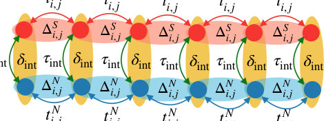
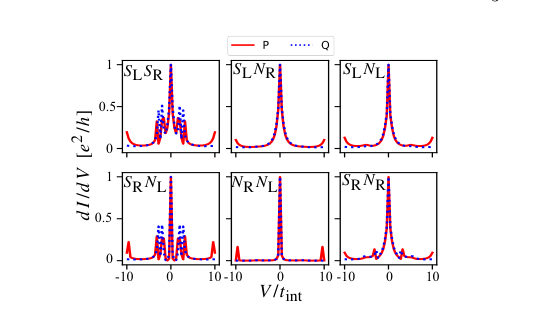
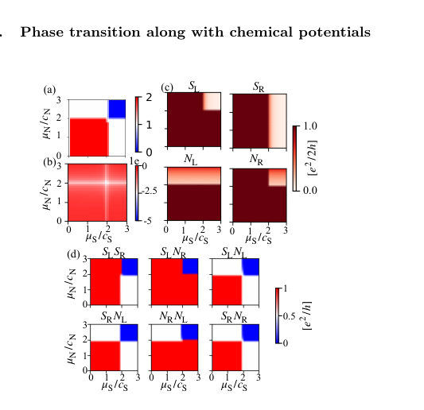
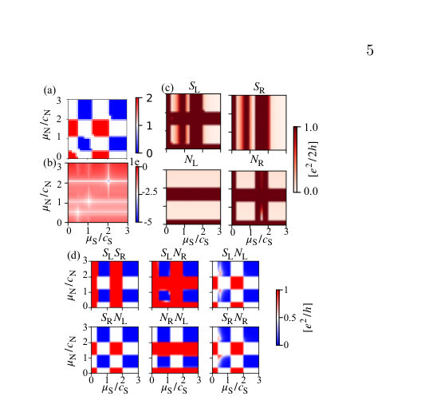
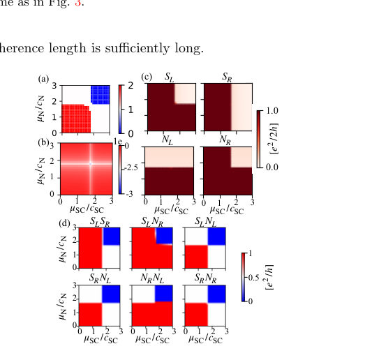
Summary. This paper explores how Fibonacci quasiperiodicity influences the topological properties of coupled Kitaev chains. It reveals that while Majorana signatures like zero-bias peaks are robust, quasiperiodicity can induce new phase transitions and cause asymmetric Majorana wave-function seepage between the chains.
Why it may be interesting. not directly relevant
Main problem. The study investigates topological phase transitions and nonlocal transport phenomena in coupled quasiperiodic Kitaev chains, specifically focusing on how Fibonacci quasiperiodicity affects Majorana edge modes and wave-function seepage.
Main result. The authors identify new topological phase transitions induced by quasiperiodicity and discover asymmetric Majorana wave-function seepage between chains, while finding that zero-bias conductance peaks remain robust against quasiperiodic modulation.
Method. The study employs the Keldysh formalism and the recursive Green's function method to calculate differential conductance, alongside the pseudospectral method to determine topological indices.
Model / system. A coupled one-dimensional p-wave superconducting Fibonacci quasicrystal consisting of a superconducting (S) chain and a normal (N) chain, modeled via a Bogoliubov-de Gennes Hamiltonian with interchain hopping and pairing.
Key observables. Local and nonlocal differential conductance, zero-bias conductance peaks (ZBCP), and the topological index (nu).
Important parameters / regimes. Interchain hopping (tau_int), quasiperiodicity parameters (rho_S, rho_N), chemical potentials (mu_S, mu_N), and the ratio of hopping to pair potential (alpha).
Assumptions / limitations. The energy gap is determined by the average value of the real-space pair potential, and the system is treated within a tight-binding framework with open boundary conditions.
Figures summary. Figure 1 shows the schematic of the coupled system; Figure 2 compares differential conductance for various lead connection patterns in periodic and quasiperiodic cases; Figure 6 illustrates topological phase transitions; Figure 8 compares ZBCP in periodic and quasiperiodic chains.
Paper structure. The paper begins with the definition of the coupled Hamiltonian and quasiperiodic model, proceeds to derive the analytical framework for conductance using Keldysh Green's functions, analyzes topological invariants via the pseudospectral method, and concludes with a discussion on the equivalence to s-wave proximity-induced systems.
We investigate the topological phases in a coupled one-dimensional p-wave superconducting Fibonacci quasicrystal modeled by the quasiperiodic Kitaev chain. Recent studies have shown that the coupled system can host topological edge modes with Majorana fermions and enhance their topological protection, depending on the pattern of quasiperiodicity. In this work, we elucidate the topological phases of the coupled system and demonstrate the dependence of differential conductance on the lead connecting pattern employing the Keldysh formalism and the recursive Green's function method. Our findings reveal the emergence of topological phases in the coupled system, which are characterized by the presence of Majorana edge modes and the seepage of the Majorana wave function. Furthermore, we identify a new topological phase transition induced by quasiperiodicity in the coupled system.
Authors: Ondřej Wojewoda, Robert Kraft, Olha Bezsmertna, Oleksandr Pylypovskyi, Jose A. Fernandez Roldan, Caroline A. Ross, Rui Xu, Sergey A. Bunyaev, Ivan Soldatov, Rudolf Schäfer, Claas Abert, Gleb N. Kakazei, Michal Urbánek, Denys Makarov
Type: both · Category: other · PDF: https://arxiv.org/pdf/2605.05156v1
Analysis basis: full PDF text, analyzed in chunks
Topic relevance: spintronics-quantum-optics interface 2/5
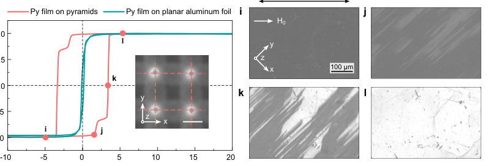
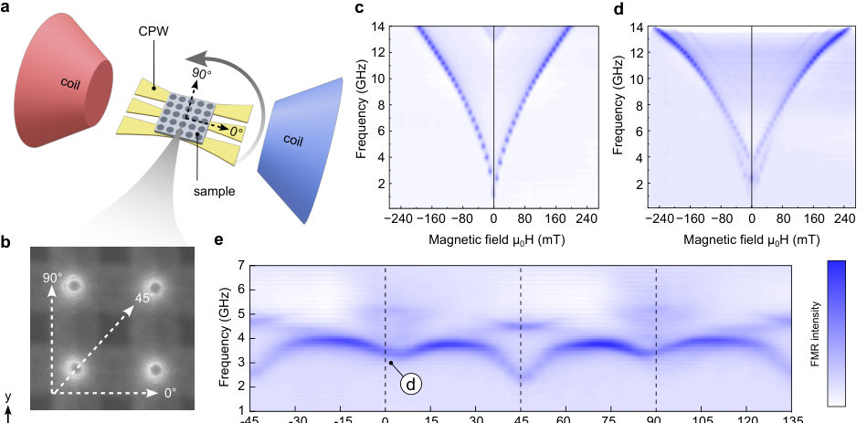
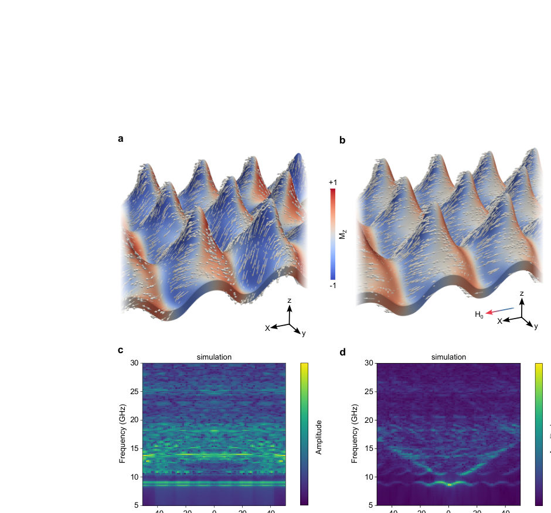
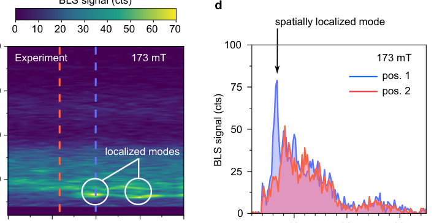
Summary. The researchers developed a method to create 2D magnonic crystals by coating 3D nanopyramids with a continuous magnetic film, avoiding the material loss of traditional etching. This approach allows for the creation of tunable band gaps and localized spin-wave modes through geometric curvature. This platform offers a versatile way to design components for future magnonic computing.
Why it may be interesting. not directly relevant
Main problem. Engineering the spin-wave dispersion relation and band structure in 2D magnonic crystals without removing material, which typically reduces spin-wave decay lengths.
Main result. Demonstrated that 3D curvature in a continuous Permalloy film can create a complete in-plane band gap and localized flat-band modes, with the ability to tune the gap via an external magnetic field.
Method. Experimental micro-focused Brillouin Light Scattering (BLS) and MOKE microscopy combined with 3D micromagnetic simulations using the finite-element method.
Model / system. A 50-nm-thick Permalloy thin film conformally grown on a 3D curvilinear template consisting of a square lattice of nonmagnetic aluminum nanopyramids (400 nm period).
Key observables. Spin-wave dispersion relations, frequency-dependent BLS signal intensity, magnetic domain patterns, and density of states.
Important parameters / regimes. 400 nm lattice period, 50 nm film thickness, external magnetic field (0 to 200 mT), and saturation magnetization of 740 kA/m.
Assumptions / limitations. The use of a continuous film approximation and the reliance on reconstructed 3D SEM images for micromagnetic modeling accuracy.
Figures summary. Figure 1 shows fabrication and domain imaging; Figure 2 compares FMR response of planar vs. curvilinear films; Figure 3 presents simulated dispersion and magnetization; Figure 4 shows field-dependent BLS spectra; Figure 5 illustrates real-space spin-wave localization.
Paper structure. The paper begins with fabrication and structural characterization, moves to magnetic property measurements (MOKE/VSM), presents spin-wave dispersion and band gap analysis via BLS and simulations, and concludes with evidence of spatial mode localization.
Engineering the dispersion relation is one of the key ingredients enabling the application of spin waves in computational elements. One way to engineer the spin-wave band structure is to create an artificial magnonic crystal, which can be used to design specific band gaps or dispersion branches. However, creating a two-dimensional magnonic crystal usually requires removing material, which dramatically decreases the decay lengths of spin waves. Here, we present a method to manipulate the demagnetizing field landscape by utilizing large-area curvilinear nanotemplates consisting of three-dimensional nanopyramids arranged in a square lattice with a period of 400 nm. In a 50-nm-thick Permalloy film grown on these curvilinear templates, we experimentally observe a complete in-plane band gap together with flat-band modes that exhibit strong real-space localization of the spin waves in the pyramid valleys. Micro-focused Brillouin light scattering measurements corroborate the numerically predicted dispersion and reveal the possibility of opening and closing this gap by varying the external magnetic field. Our results establish three-dimensional-templated continuous films as a versatile platform for two-dimensional signal processing and magnonic computing elements.
Authors: Junyoung Hyun, Krzysztof Szulc, Mateusz Zelent, Nikolai Kuznetsov, Lukáš Flajšman, Maciej Krawczyk, Paweł Gruszecki, Sebastiaan van Dijken
Type: both · Category: other · PDF: https://arxiv.org/pdf/2605.04774v1
Analysis basis: full PDF text, analyzed in chunks
Topic relevance: spintronics-quantum-optics interface 2/5
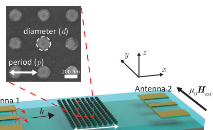
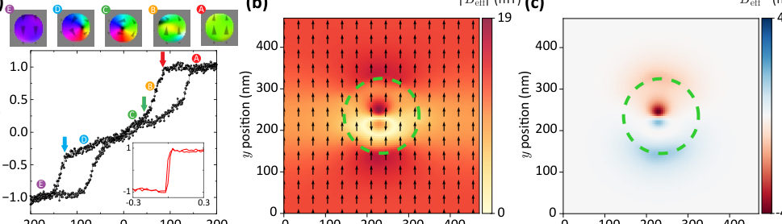
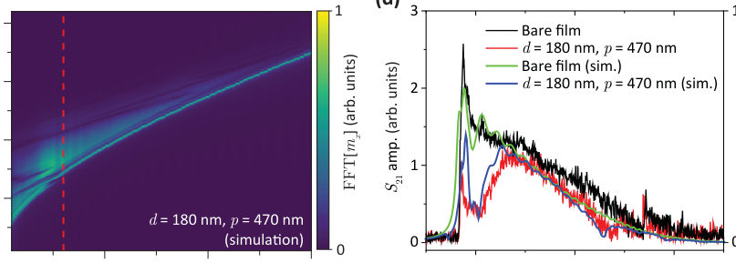
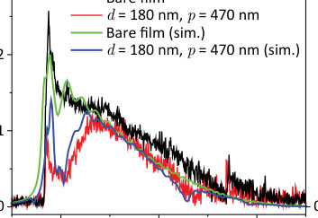
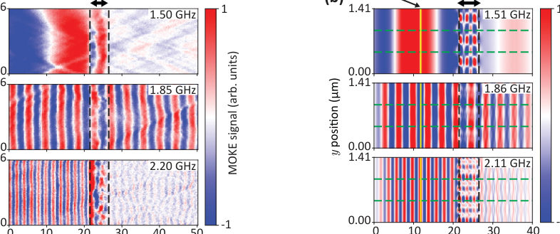
Summary. The researchers show that spin-wave bandgaps in a hybrid YIG/CoFeB magnonic crystal can be created through mode hybridization rather than traditional Bragg scattering. This mechanism allows for highly tunable and reconfigurable spin-wave transport by adjusting the geometry and magnetic state of the nanodisks. This provides a new pathway for designing advanced magnonic devices.
Why it may be interesting. not directly relevant
Main problem. Controlling spin-wave propagation in magnonic crystals by moving beyond conventional Bragg scattering-based bandgap formation.
Main result. Demonstrated that spin-wave bandgaps can be engineered via mode hybridization between fundamental magnonic-crystal modes and in-plane transverse standing modes induced by nanodisks.
Method. A combination of spin-wave spectroscopy, SNS-MOKE microscopy for 2D mapping, micromagnetic simulations (MuMax3), and Finite Element Method (FEM) simulations.
Model / system. A hybrid 2D magnonic crystal consisting of a low-damping YIG film coupled to a periodic array of CoFeB nanodisks, where the nanodisks can exist in various magnetic states, including a vortex configuration.
Key observables. Spin-wave transmission spectra (S21 parameters), 2D spin-wave maps, magnetization hysteresis loops, and spin-wave dispersion relations.
Important parameters / regimes. Disk diameter (d), lattice period (p), external magnetic field (Hext), and nanodisk magnetization state (vortex configuration).
Assumptions / limitations. The study operates in the linear spin-wave regime with excitation power set to -20 dBm.
Figures summary. Fig 1: Device geometry and SEM image of the array; Fig 2: MOKE hysteresis loops and magnetization evolution; Fig 6: Bare-film vs. frozen-spin dispersion; Fig 7: Spatial mode profiles and dispersion-related anticrossings.
Paper structure. The paper introduces the hybrid architecture, details the experimental and simulation methodologies, analyzes the magnetization dynamics of the nanodisks, demonstrates the formation of non-Bragg bandgaps through mode hybridization, and explores the effects of geometric tuning and magnetic state on the band structure.
We investigate spin-wave transport in hybrid two-dimensional magnonic crystals comprising a low-damping yttrium iron garnet (YIG) film coupled to a periodic array of CoFeB nanodisks. Using propagating spin-wave spectroscopy, super-Nyquist magneto-optical Kerr effect microscopy, and micromagnetic simulations, we demonstrate the formation of pronounced and tunable bandgaps that do not originate from conventional Bragg scattering. Instead, these gaps arise from hybridization between the fundamental magnonic-crystal mode and in-plane transverse standing modes induced by the periodic nanodisk array. The spectral position and width of these gaps are controlled by geometric parameters and by the magnetic state of the nanodisks, including their vortex configuration, which governs both static and dynamic dipolar coupling. For larger lattice periods, additional gaps emerge through hybridization with modes quantized both transverse and parallel to the spin-wave propagation direction, reflecting dispersion folding in two dimensions. Our results establish mode hybridization as a versatile mechanism for engineering spin-wave band structures beyond the constraints of Bragg scattering and provide a pathway toward reconfigurable magnonic devices based on dipolar-coupled hybrid architectures.
Authors: Marko A. Kriegel, Karim M. Omambac, Smruti R. Mohanty, Tobias Hartl, Stefan Schulte, Niels Ganser, Pascal Dreher, Alexandra Rödl, Steffen Franzka, Germán Sciaini, Thomas Michely, Frank-J. Meyer zu Heringdorf, Michael Horn-von Hoegen
Type: experiment · Category: other · PDF: https://arxiv.org/pdf/2605.04871v1
Analysis basis: full PDF text, analyzed in chunks
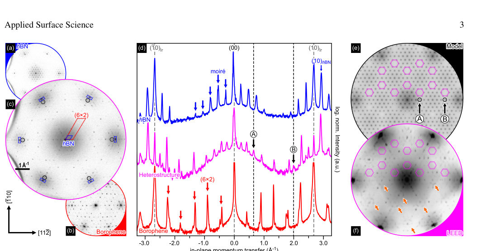
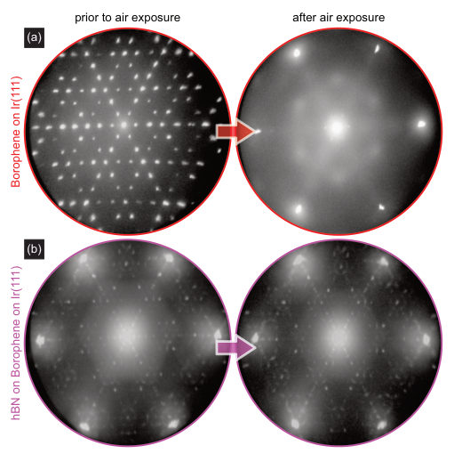
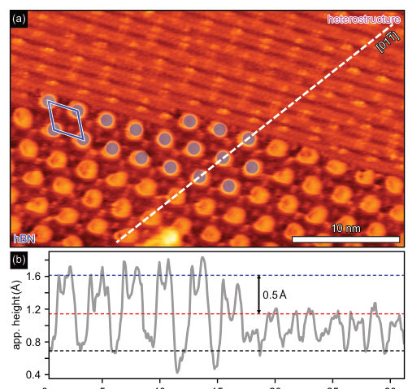
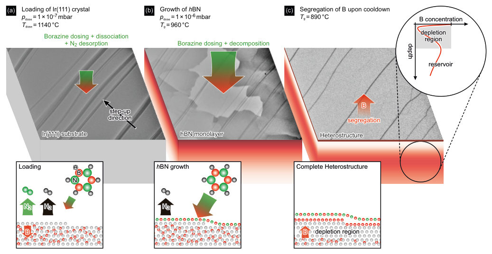
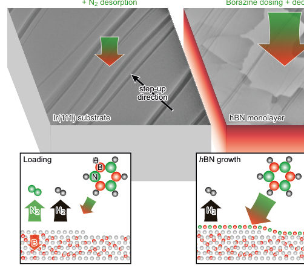
Summary. The researchers developed a new way to grow vertical 2D heterostructures by using the way boron moves through iridium during cooling. This method allows them to place a layer of borophene underneath a layer of hBN, which also protects the sensitive borophene from oxidation. This 'growth from below' approach offers a scalable route for creating complex, multi-layered 2D materials.
Why it may be interesting. not directly relevant
Main problem. Direct synthesis of vertical 2D material heterostructures via CVD is difficult because the first layer often suppresses the catalytic decomposition of precursors needed for subsequent layers.
Main result. The authors demonstrated a 'growth from below' method using intrinsic segregation to synthesize a vertical Ir(111)/borophene/hBN heterostructure, where hBN acts as a protective cap for the underlying borophene.
Method. A two-step ultrahigh vacuum CVD process using borazine as a single-source precursor, involving high-temperature boron dissolution followed by lower-temperature hBN growth and cooling-induced segregation.
Model / system. A vertical heterostructure consisting of a single-crystalline Ir(111) substrate, an intermediate borophene layer with (6x2) reconstruction, and an overlying hexagonal boron nitride (hBN) monolayer.
Key observables. SPA-LEED diffraction patterns (moiré spots and borophene periodicity), STM real-space morphology and height profiles, and LEEM real-time growth imaging.
Important parameters / regimes. Temperature regimes of 1140 C (dissolution), 960 C (hBN growth), and 890 C (segregation); precursor pressures between 1e-7 and 1e-6 mbar.
Figures summary. Fig 1 shows SPA-LEED patterns and theoretical convolution models for the heterostructure; Fig 2 displays STM images and height profiles of the layers; Fig 4 shows LEEM images of the Ir(111) surface during the growth process.
Paper structure. The paper introduces the synthesis challenge, describes the two-step CVD process and the intrinsic segregation mechanism, presents structural characterization via LEED and STM to confirm vertical stacking, demonstrates the protective role of hBN via stability tests, and concludes with the implications for scalable 2D heterostructure growth.
We report on a two-step ultrahigh vacuum chemical vapor deposition synthesis of a vertical Ir(111)/borophene/hexagonal boron nitride heterostructure, using borazine as a single-source precursor. The process takes advantage of the finite solubility of boron in Ir: low precursor pressure at high temperature first establishes a boron reservoir in the near-surface region of the substrate, whereas subsequent growth at higher precursor pressure promotes the formation of a closed hexagonal boron nitride monolayer. During cooldown, the reduced boron solubility drives segregation to the surface, resulting in the formation of a borophene monolayer beneath the hexagonal boron nitride overlayer. The heterostructure, with micron sized grains, homogeneously covers the entire Ir substrate. The study is performed by complementary spot profile analysis low-energy electron diffraction, low-energy electron microscopy, and scanning tunneling microscopy measurements. This intrinsic segregation-assisted growth concept provides a promising route toward scalable synthesis of high-quality, vertical heterostructures of two-dimensional materials.
Authors: Rafael Espinosa Castañeda, Ashley Dale, Hongchen Wang, Yonatan Kurniawan, Hao Wan, Runze Zhang, Adji Bousso Dieng, Kangming Li, Jason Hattrick-Simpers
Type: both · Category: disordered systems and neural networks · PDF: https://arxiv.org/pdf/2605.05104v1
Analysis basis: full PDF text, analyzed in chunks
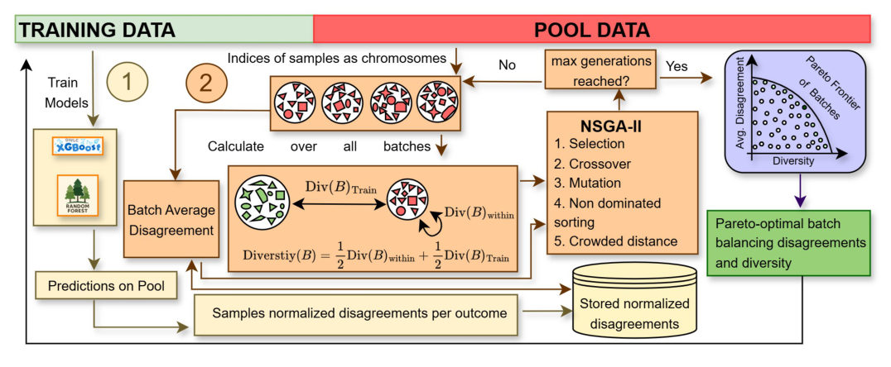
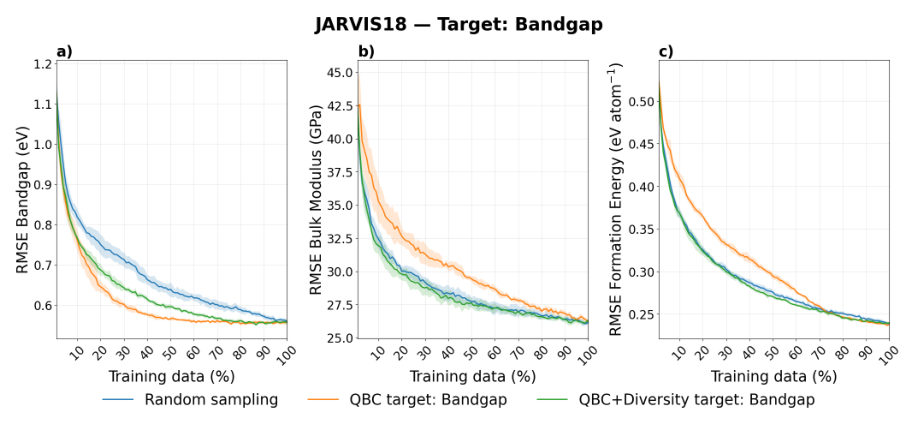
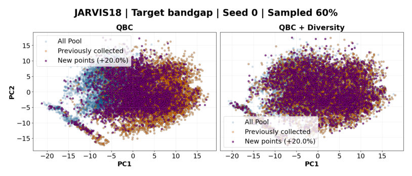
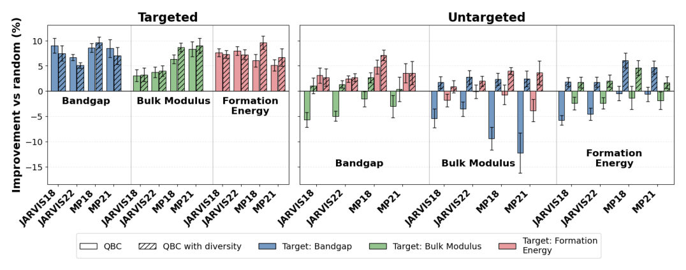
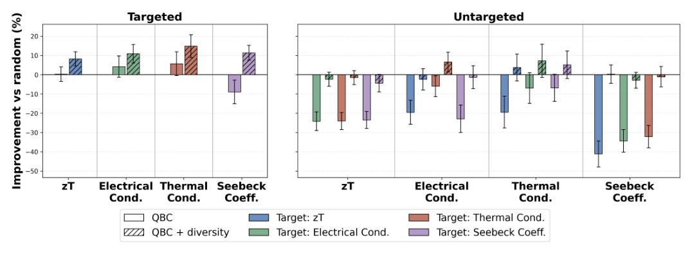
Summary. This paper proposes a new method for building materials datasets that balances immediate research goals with long-term utility. By incorporating feature-space diversity into the selection process, the framework prevents the sampling bias that typically makes datasets useless for predicting properties not explicitly targeted during collection.
Why it may be interesting. not directly relevant
Main problem. Materials science data collection often focuses on specific target properties, creating sampling bias that reduces the utility of datasets for future, unanticipated scientific tasks.
Main result. A diversity-aware framework improves predictive performance on untargeted properties by up to 10% and prevents the 40% performance degradation seen in purely targeted strategies, especially in noisy experimental datasets.
Method. The authors use a multi-objective optimization approach with the NSGA-II genetic algorithm to balance target property informativeness with feature-space diversity (using cosine dissimilarity).
Model / system. The study evaluates the framework using DFT-based repositories (Materials Project, JARVIS) and the experimental sysTEm thermoelectric dataset, utilizing structural and compositional descriptors via Voronoi tessellation.
Key observables. Electronic bandgap, elastic bulk modulus, formation energy, thermoelectric figure of merit (zT), thermal conductivity, electrical conductivity, and Seebeck coefficient.
Important parameters / regimes. High-dimensional feature space (up to 273 dimensions), iterative selection of 1% of the pool per iteration, and weighting between informativeness and diversity.
Assumptions / limitations. Assumes that chosen properties are weakly linearly correlated to ensure true cross-objective generalization; assumes the utility of cosine similarity for diversity in high-dimensional spaces.
Figures summary. Figures illustrate the data selection pipeline, RMSE curves for various properties, and comparisons of chemical manifold coverage (PCA space) between targeted and diversity-aware sampling.
Paper structure. Introduction of the sampling bias problem, description of the diversity-aware framework and NSGA-II implementation, evaluation on DFT and experimental datasets, and a detailed appendix of performance metrics across various property combinations.
Materials science data collection can be expensive, making the reuse and long-term utility of datasets critical important for future discovery campaigns. In practice, researchers prioritize a subset of properties due to research interests. However, ignoring a subset of outcomes in data collection campaigns potentially generate datasets poorly suited for future learning tasks. Here, we present a framework for dataset construction that maximizes informativeness for target properties of interest while preserving performance on untargeted ones. Our approach uses diversity-aware selection to ensure broad coverage of the materials space. In noisy experimental dataset construction, we find that without our diversity-aware framework, prediction performance on untargeted properties can degrade by up to 40% relative to random sampling, whereas applying our framework yields improvements of up to 10% . For targeted properties, performance can degrade with respect to random sampling by up to 12.5% without diversity, while our framework achieves gains of up to 25%. Incorporating diversity into dataset construction not only preserves informativeness for the targeted properties, but also improves materials coverage for potential future objectives. As a result, the constructed datasets remain broadly informative across considered and unconsidered outcomes, ensuring unbiased quality entries and mitigating cold-start limitations in subsequent modeling and discovery campaigns.
Authors: Seifallah Fetni, Thinh Quy Duc Pham, Truong Vinh Hoang, Hoang Son Tran, Laurent Duchêne, Xuan-Van Tran, Anne Marie Habraken
Type: theory · Category: disordered systems and neural networks · PDF: https://arxiv.org/pdf/2605.04229v1
Analysis basis: full PDF text, analyzed in chunks
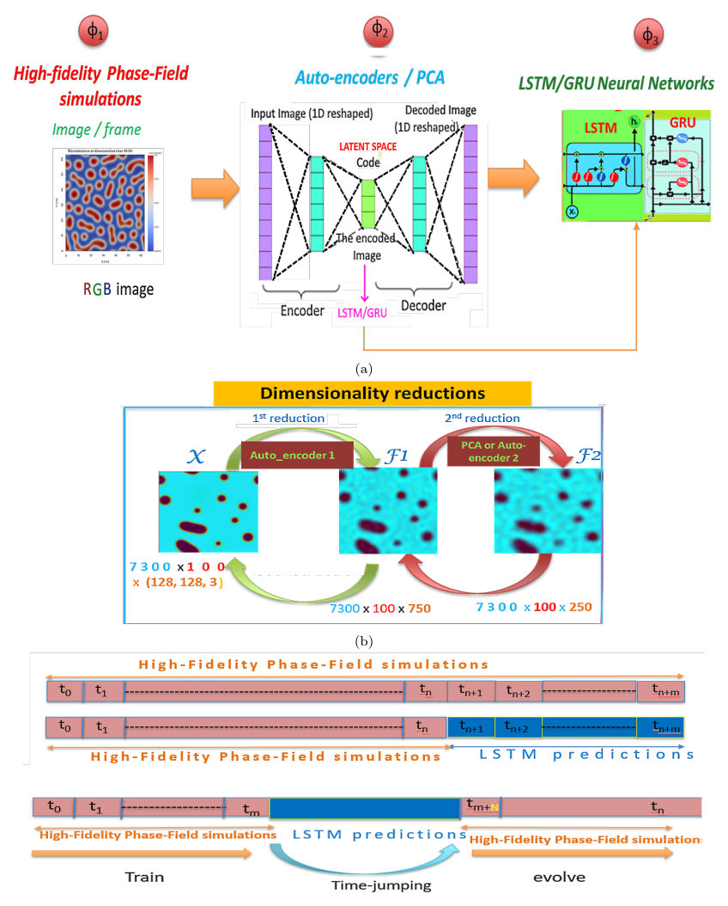
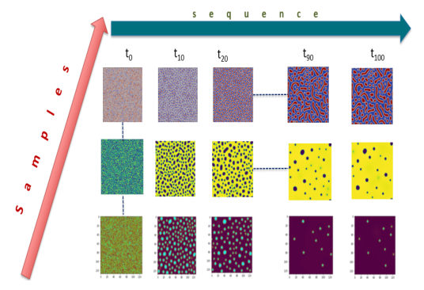
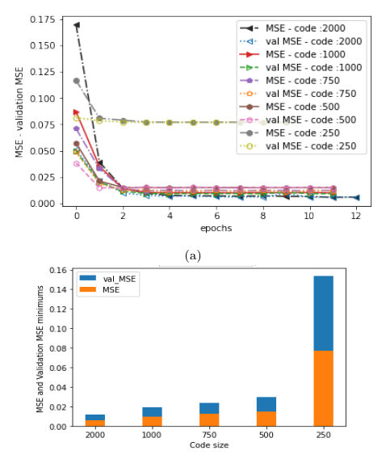
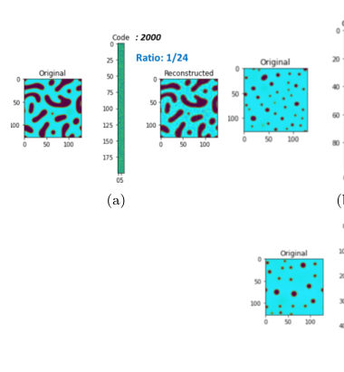
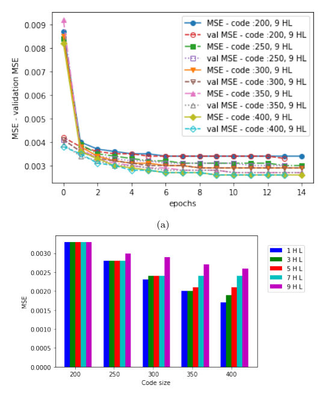
Summary. This paper presents a machine learning framework to accelerate Phase-Field simulations by compressing high-dimensional microstructural images into a low-dimensional latent space. By combining Auto-encoders with PCA and using LSTM networks, the authors can predict future material states without the heavy computational burden of traditional solvers. This approach allows for rapid 'time jumping' in complex phase-transformation simulations.
Why it may be interesting. not directly relevant
Main problem. The high computational cost of Phase-Field simulations for studying microstructural evolution requires efficient dimensionality reduction and time-series prediction methods.
Main result. A hybrid framework using Auto-encoders and PCA achieves a 1/196 reduction ratio with over 80% accuracy, enabling LSTM/GRU networks to predict future microstructural frames almost instantaneously.
Method. A three-phase machine learning pipeline: (1) generating datasets via Phase-Field simulations, (2) non-linear feature extraction using Auto-encoders followed by PCA, and (3) temporal prediction using LSTM and GRU recurrent neural networks.
Model / system. The physical system is microstructural evolution, specifically spinodal decomposition in a binary alloy (e.g., Si in AlSi10Mg), modeled using the Cahn-Hilliard equation with chemical and gradient energy terms.
Key observables. Microstructural images (simulated frames), reconstruction accuracy (MSE), reduction ratio, and explained variance.
Important parameters / regimes. Concentration (X), mobility (M), and gradient energy coefficient (kappa); latent dimension sizes ranging from 200 to 2000.
Assumptions / limitations. The framework assumes that learned spatio-temporal patterns in the latent space accurately represent the underlying physical evolution; it also neglects elastic strain in the energy model.
Figures summary. Figure 1 shows the ML framework pipeline; Figure 2 displays microstructural evolution; Figure 3 shows MSE evolution during training; Figure 4 shows reconstructed images; Figure 6 shows PCA explained variance; Figure 8 compares LSTM/GRU loss and predicted vs. actual frames.
Paper structure. The paper introduces the computational problem, describes the Phase-Field model and dataset generation, details the two-step dimensionality reduction architecture (AE and PCA), evaluates time-series prediction performance using RNNs, and discusses future scalability and limitations.
In this work, a data-driven framework based on Phase-Field simulations data is proposed to highlight the capabilities of neural networks to ensure accurate low dimensionality reduction of simulated microstructural images and to provide time-series analysis. The dataset was indeed constructed from high-fidelity Phase-Field simulations. Analyses demonstrated that the association of auto-encoder neural networks and principal component analyses leads to ensure efficient and significant dimensionality reduction: 1/196 of reduction ratio with more than 80% of accuracy. These findings give insight to apply analyses on data from the latent dimension. Application of Long Short Term Memory (LSTM) neural networks showed the possibility of making next frame predictions; that makes possible the acceleration of Phase-Field simulation without the need of high computing resources. We discussed the application of such a framework on various areas of research. Different methods are proposed from the conducted analyses, in order to ensure dimensionality reduction, including auto-encoders, principal component analysis and Artificial Neural Networks, and time-series analysis, including LSTM and Gated Recurrent Unit (GRU).
Authors: Xiao-Fan Zhang, Yang Yang, Ze-Qing Guo, Li Lv, Can Gao, Jian-Ping Zhou, Xiao-ming Chen
Type: both · Category: other · PDF: https://arxiv.org/pdf/2605.04620v1
Analysis basis: full PDF text, analyzed in chunks
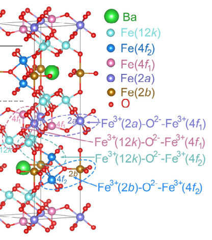
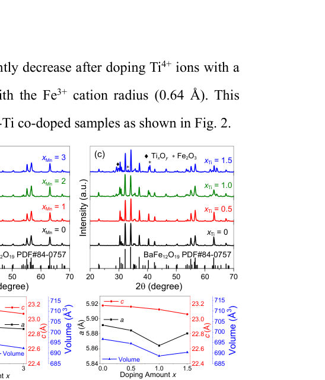
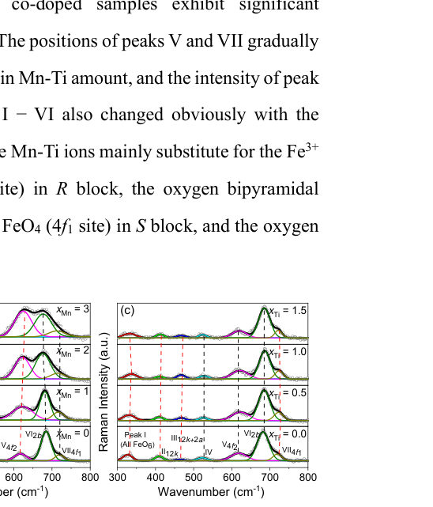
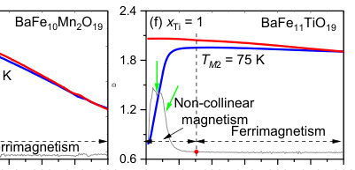
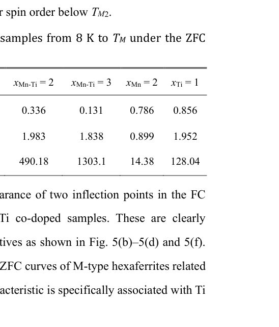
Summary. This paper explores how substituting iron ions with manganese and titanium in barium hexaferrite alters its magnetic and electrical properties. It demonstrates that titanium doping can induce a complex noncollinear spin structure and that co-doping can be used to tune the magnetodielectric response for potential applications in multifunctional materials.
Why it may be interesting. not directly relevant
Main problem. Investigating how Mn and Ti co-substitution modulates the magnetic, dielectric, and magnetodielectric (MD) properties of M-type BaFe12O19 hexaferrite, specifically focusing on the stabilization of noncollinear spin order.
Main result. Ti substitution induces a noncollinear longitudinal conical spin order by disrupting superexchange interactions, while Mn-Ti co-doping enhances the MD response at low magnetic fields and modifies dielectric relaxation mechanisms.
Method. The study uses solid-state reaction for synthesis, Raman spectroscopy and XRD for structural characterization, and broadband dielectric spectroscopy and magnetization measurements (ZFC/FC) for property analysis, complemented by VASP-based first-principles calculations.
Model / system. The physical system is M-type BaFe12O19 hexaferrite ceramics, including Mn- and Ti-doped and co-doped variants. The magnetic behavior is modeled via superexchange interactions between Fe3+ ions at various crystallographic sites (2a, 2b, 4f1, 4f2, 12k).
Key observables. Dielectric permittivity, dielectric loss, magnetization (Ms, Hc), magnetodielectric coefficient (delta epsilon/epsilon), and formation energy.
Important parameters / regimes. Substitution levels (x), temperature range (10 K to 330 K), magnetic field strength (up to 50 kOe), and transition temperatures (TM1, TM2).
Assumptions / limitations. The study assumes the validity of the spin-phonon coupling model for the pure sample's MD effect and the use of the Ginzburg-Landau theory for describing the low-temperature MD regime.
Figures summary. Figures include Raman spectra, XRD patterns, magnetization vs. temperature (ZFC/FC) curves, magnetization vs. field loops, dielectric relaxation plots (Cole-Cole/complex modulus), and the temperature dependence of the MD coefficient.
Paper structure. The paper begins with structural characterization (XRD, Raman) and site occupancy analysis (DFT), followed by magnetic property investigations (magnetization, spin order), then dielectric and magnetodielectric property analysis across temperature ranges, and concludes with a discussion on the physical mechanisms (spin-phonon coupling, electron hopping, and Maxwell-Wagner polarization).
We prepared Mn- and Ti mono-doped and co-doped BaFe12O19 hexaferrites via solid-state reaction. Mn ions preferentially occupy the 4f2 and 2b sites, while Ti ions mainly substitute the Fe3+ ions at 4f1 and 12k sites as revealed by the Raman spectroscopy and formation energy. Pure BaFe12O19 exhibits ferrimagnetism. The hexaferrites related to Ti doping have noncollinear longitudinal conical spin order at low temperatures, where BaFe6Mn3Ti3O19 retains this spin order up to room temperature. Ti4+ substitution at 4f1 and 12k sites plays a pivotal role in stabilizing the noncollinear conical spin order through adjusting the superexchange interactions and reducing the uniaxial magnetocrystalline anisotropy along the c-axis. The magnetic response exhibits two distinct transition temperatures because Ti4+ ions interrupt the magnetic superexchange interactions with two inequivalent exchange integrals. Pure BaFe12O19 presents a quantum paraelectric behavior at low temperatures, which is disrupted by Mn-Ti doping due to the decoupling of electric dipoles within the triangular bipyramid. Electron hopping and polaronic effects dominate the dielectric response at 10 - 50 K, while Maxwell-Wagner interfacial polarization and electron hopping contribute to dielectric dispersion at higher temperatures. The negative MD effect of pure BaFe12O19 and BaFe6Mn3Ti3O19 at 10 K originates from spin-phonon coupling and electric polarization induced by noncollinear spin order under magnetic field, respectively. The Mn-Ti co-doped samples achieve relatively higher MD responses at low magnetic fields. In higher temperatures, the MD effect arises mainly from the magnetic field modulation of the electron hopping with non-intrinsic interfacial polarization. This research reveals the physical properties of M-type hexaferrite can be modulated through substituting Fe3+ ions at different sites.
Authors: Nils-Erik Schütte, Carl Emil Mørch Nielsen, Niclas Götting, Alexander Steinhoff, Gabriel Bester, Christopher Gies
Type: theory · Category: strongly correlated electrons · PDF: https://arxiv.org/pdf/2605.04667v1
Analysis basis: full PDF text, analyzed in chunks
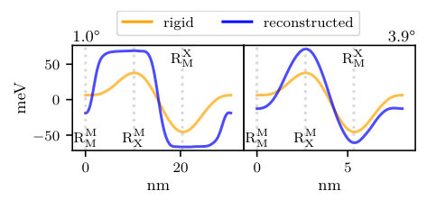
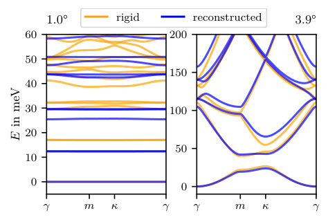
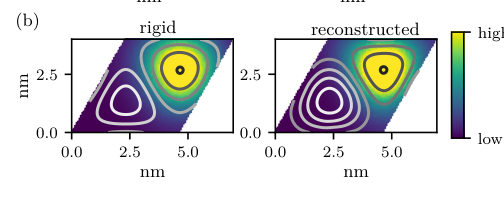
Summary. This paper investigates how the physical structure and surrounding environment of moire TMD bilayers change the way interlayer excitons interact. It reveals that anisotropic screening can turn repulsive interactions into attractive ones, potentially explaining observed many-body phenomena in these materials.
Why it may be interesting. The discovery of an effective long-range attraction mediated by dielectric screening provides a new mechanism for controlling many-body phases like superfluidity and density waves in moire lattices, which is highly relevant to many-body dynamics.
Main problem. The study aims to provide a material-realistic description of exciton-exciton interactions in TMD moire heterobilayers by accounting for both atomic reconstructions and highly anisotropic dielectric screening.
Main result. The researchers found that anisotropic screening causes a crossover from repulsive to attractive long-range interactions, and that atomic reconstructions significantly modify the on-site interaction strength.
Method. The work uses classical force-field relaxations for atomic reconstruction, solves Poisson's equation for anisotropic dielectric environments, and employs an extended Bose-Hubbard model within a mean-field approximation.
Model / system. The system consists of MoS2/WS2 transition metal dichalcogenide (TMD) heterobilayers at small twist angles. The physics is modeled using an extended Bose-Hubbard model describing interlayer excitons as spinless bosons on a moire lattice.
Key observables. On-site interaction (U), nearest-neighbor interaction (V), hopping amplitude (t), and the moire potential depth.
Important parameters / regimes. Twist angles (1.0 to 3.9 degrees), dielectric environment (vacuum vs. hBN), and filling factor (rho).
Assumptions / limitations. Excitons are treated as bosons neglecting internal fermionic structure; the variation of exciton binding energy across the lattice is neglected; and the K-K band gap is assumed to be direct.
Figures summary. Figure 1 compares moire potential for different twist angles and rigid vs. reconstructed models; Figure 7 shows the crossover from repulsive to attractive interaction in different dielectric environments; Figure 8 shows Hubbard parameters as a function of twist angle; Figure 11 displays the Bose-Hubbard phase diagram.
Paper structure. The paper introduces the problem of exciton interactions, details the modeling of atomic reconstruction and anisotropic screening, presents the derivation of the interaction potential, applies these to a Bose-Hubbard model to predict quantum phases, and concludes with experimental implications.
The moiré pattern, which emerges due to a relative rotation between two monolayers of transition metal dichalcogenides, features a long lattice period for small twist angles. The resulting band structure modulation acts as an effective potential for interlayer excitons (IXs), which can realize correlated many-body phenomena. Here, we aim for a material-realistic modelling of the exciton-exciton interaction, taking into account lattice reconstructions and an exciton-exciton potential that incorporates the highly anisotropic screening imposed by the two-dimensional bilayer and the dielectric background. We find strong modifications of the on-site interaction induced by the change of the moiré potential during lattice reconstructions, while for long-range interactions on the length scale of the moiré period, anisotropic dielectric screening leads to a crossover from a repulsive to an attractive interaction. The interaction potential and hopping amplitudes serve as parameters for a Bose-Hubbard model on the moiré lattice, which we use to explain correlated behavior of interlayer excitons.
Authors: Mohamad Bahsoun, Jesse Groenen, Gonzague Agez, Sébastien Joulié, Cécile Marcelot, Robin Cours, Sébastien Kerdiles, Mathieu Opprecht, Caroline Bonafos, Jean-Marie Poumirol
Type: both · Category: disordered systems and neural networks · PDF: https://arxiv.org/pdf/2605.04854v1
Analysis basis: full PDF text, analyzed in chunks
Summary. Researchers have demonstrated that localized surface plasmon resonances can emerge in unpatterned, hyperdoped polycrystalline silicon without the need for lithographic patterning. By using laser annealing to create nanometric grains, the grain boundaries naturally function as dielectric gaps between metallic-like silicon domains. This approach offers a scalable and cost-effective way to create mid-infrared plasmonic devices compatible with existing microelectronics.
Why it may be interesting. The paper demonstrates how structural disorder and grain boundaries can be leveraged to create emergent optical resonances, which is relevant to understanding light-matter interaction in disordered nanophotonic environments.
Main problem. The difficulty of mass-manufacturing mid-infrared plasmonic metasurfaces due to the reliance on expensive and time-consuming nanoscale patterning.
Main result. The discovery that unpatterned, hyperdoped polycrystalline silicon exhibits localized surface plasmon resonances (LSPR) because grain boundaries act as natural metal-dielectric interfaces.
Method. The study combines laser thermal annealing (LTA) for fabrication, HRTEM and ACOM for microstructural analysis, FTIR spectroscopy for optical response, and FDTD simulations for electrodynamic modeling.
Model / system. The system consists of hyperdoped polycrystalline silicon thin films where nanometric grains (5-50 nm) are separated by ultrathin (0.5-2.5 nm) insulating grain boundaries, acting as a collection of metallic antennas.
Key observables. Normalized transmission spectra, resonance frequency, resonance energy, extinction amplitude, and electron scattering time.
Important parameters / regimes. Grain size (5-50 nm), carrier density (up to 1.01e21 cm^-3), filling factor, and annealing temperature relative to the full melt threshold.
Assumptions / limitations. The system operates in a regime where the quasi-static approximation is invalid due to strong dipole-dipable coupling between nanodomains.
Figures summary. Fig 1 shows microstructural evolution via HRTEM; Fig 2 shows grain orientation maps; Fig 3 displays experimental transmission spectra showing the transition from Drude-like to LSPR behavior; Fig 4 presents FDTD simulations of antenna arrays varying gap size, antenna size, and randomness.
Paper structure. The paper introduces the scaling problem of plasmonics, describes the fabrication of hyperdoped polysilicon, presents microstructural characterization, details the optical spectroscopy results, and concludes with FDTD simulations to explain the physical mechanism of emergent LSPR.
The ability to engineer localized surface plasmon resonances at large scale usually relies on precise nanoscale patterning. Here, we demonstrate that mid-infrared plasmonic responses can instead emerge in unpatterned polysilicon films composed of nanometric (5-50 nm) grains, challenging established design paradigms and eliminating the need for external nanostructuring. Using tailored out-of-equilibrium annealing conditions, we show that hyperdoped polysilicon layers exhibit enhanced light-matter interactions that can be tuned across the mid-infrared range. By combining advanced electron microscopy, infrared spectroscopy and finite-difference time-domain electrodynamic simulations, we demonstrate that these remarkable optical properties originate from naturally formed metal-dielectric interfaces at grain boundaries, which support localized surface plasmon resonances. Importantly, this result is universal and can be extended to any doped semiconductor system, regardless of the synthesis technique, provided that the grain size remains in the nanometric range. This work opens up a new field in plasmonics centered on polycrystalline semiconductors, paving the way for cost-effective systems that are fully compatible with microelectronic and photovoltaic technologies, and capable of significantly reshaping light-matter interactions in the infrared range.
Authors: Matúš Kaintz, Antonio Cammarata
Type: theory · Category: other · PDF: https://arxiv.org/pdf/2605.04942v1
Analysis basis: full PDF text, analyzed in chunks
Summary. This paper provides a theoretical framework for designing diamond-based solar cells and diodes using engineered defects like BVB and PV. It demonstrates how these defects can enable intermediate-band absorption and simplified manufacturing while preserving diamond's superior thermal and transport properties.
Why it may be interesting. not directly relevant
Main problem. Establishing design guidelines for high-performance diamond-based optoelectronic devices, specifically focusing on intermediate-band solar cells and single-dopant diodes.
Main result. The study identifies that BVB defects introduce intermediate bands that enhance sub-bandgap absorption without degrading diamond's transport properties, and that PV-doped diamond enables efficient single-dopant PN junctions.
Method. First-principles calculations using DFT with GW corrections for electronic structure, BSE for optical properties, and linearized Boltzmann transport equation for carrier and thermal transport.
Model / system. Diamond-based architectures including PIN junctions with BVB intermediate-band absorbers and PN junctions based on phosphorus-vacancy (PV) defects.
Key observables. Bandgap, optical absorption spectra, carrier mobility, lattice thermal conductivity, Seebeck anisotropy, and electric field profiles.
Important parameters / regimes. BVB defect concentration (target 0.4%), absorber thickness (~500 nm), and solar spectra (AM1.5G and AM0).
Assumptions / limitations. DFT underestimates the bandgap necessitating GW corrections; excitonic effects are assumed to be significantly screened in heavily doped regions; BVB transport calculations were limited to a 4x4x4 supercell.
Figures summary. Schematics of defect environments, visualization of supercells, magnetization vs. temperature, electronic band structures (DFT vs. GW), and analysis of electric field/doping profiles in PIN/PN junctions.
Paper structure. The paper introduces the problem of diamond optoelectronics, details the defect-engineered architectures, presents electronic and optical property calculations, discusses transport and thermal properties, and concludes with practical device design guidelines.
This work establishes key technological guidelines for designing diamond-based optoelectronic devices, derived from a first-principles investigation of two architectures: a PIN junction with a boron-vacancy-boron (BVB) intermediate-band absorber, and a PN junction based on phosphorus-vacancy (PV) defects. For the PIN solar cell, practical design principles include: i) aligning incident light in the xz-plane to exploit anisotropic absorption; ii) using graded junctions to mitigate tunnelling losses at abrupt interfaces; iii) targeting an absorber thickness of ~500 nm to balance absorption and carrier extraction; and iv) leveraging the high transparency of both contact layers for bifacial device configurations. For the PN diode, the PV-doped diamond operates via impurity-band conduction, making it suitable for degenerate p-type applications such as tunnel diodes or asymmetric junctions, while its temperature-dependent Seebeck anisotropy and sign-reversal offer opportunities for thermal management applications. When paired with phosphorus-doped n-type regions, these defects enable single-dopant junctions that significantly simplify device manufacturing. Using density functional theory with GW corrections, Bethe-Salpeter equation calculations and carrier transport modelling coupled to device electrostatics via a Poisson solver, we show that the BVB defect introduces intermediate bands without degrading diamond's high carrier mobility or thermal conductivity, while PV-doping provides high conductivity at room temperature through impurity-band transport. Overall, both defect-engineered systems preserve diamond's superior transport and thermal properties even after doping, offering viable pathways for high-performance diamond optoelectronics. These guidelines provide a practical foundation for fabricating efficient diamond-based photovoltaic and diode devices.
Authors: Fanyu Meng, Ying Feng, Mingyang Sun, Baiyan Kang, Donglin Song, Tuo Zhang, Jia Zhang, Wenping Zhou, Jijun Zhao, Yi Wang
Type: experiment · Category: other · PDF: https://arxiv.org/pdf/2605.04486v1
Analysis basis: full PDF text, analyzed in chunks
Summary. The researchers demonstrated a new way to control magnetism by converting orbital angular momentum into magnons within a NiO insulator. This process is much more efficient than previous methods, offering a promising path for developing low-power, high-speed nanoelectronic devices.
Why it may be interesting. not directly relevant
Main problem. The difficulty in achieving efficient magnetization switching in orbital-based heterostructures due to low orbital-to-electron spin conversion and the lack of a demonstrated direct coupling between orbital angular momentum and magnons.
Main result. Experimental demonstration of efficient orbital-to-magnon (L-M) conversion in a Ti/NiO/CoFeB bilayer at room temperature, achieving magnetization switching with efficiency significantly higher than traditional orbital or spin-only systems.
Method. Spin-Torque Ferromagnetic Resonance (ST-FMR), second-harmonic Hall voltage measurements, MOKE microscopy, and temperature-dependent transport measurements.
Model / system. An orbital metal/antiferromagnetic insulator bilayer system, specifically Ti/NiO/CoFeB and W/NiO/Ti/CoFeB multilayer stacks, utilizing Ti as an orbital current source and NiO as the medium for L-M conversion.
Key observables. Damping-like torque efficiency (theta_DL), orbital-to-magnon conversion coefficient (C_MI), orbital Hall conductivity, and switching efficiency (eta).
Important parameters / regimes. NiO thickness (t_NiO), Néel temperature (T_N), orbital diffusion length (lambda_O), and magnon diffusion length (lambda_M).
Figures summary. Fig 1: Schematic of L-M conversion mechanism. Fig 2: ST-FMR signals, theta_DL dependence on NiO thickness and temperature, and exchange bias. Fig 3: Comparison of L-M conversion coefficient in NiO vs. other metals. Fig 4: Demonstration of current-induced magnetization switching.
Paper structure. Introduction of the L-M conversion problem, experimental setup and material characterization, demonstration of thickness and temperature-dependent torque, comparison of conversion efficiencies, and demonstration of efficient magnetization switching.
The pursuit of beyond-Moore information technologies has stimulated the exploration of novel information carriers, such as electron spin, orbital, and magnon, beyond electron charge. Efficient interconversion among these degrees of freedom and precise control over the information states are crucial for advancing nanoelectronic devices. However, a direct coupling between orbital angular momentum (L) and magnons (M) has remained elusive, and magnetization switching through orbital-to-magnon (L-M) conversion has not yet been achieved. Here, we report the experimental demonstration of L-M conversion in an orbital metal/antiferromagnetic insulator bilayer at room temperature, with an efficiency over an order of magnitude higher than that in traditional orbital systems lacking the L-M process. Consequently, we achieved efficient room-temperature perpendicular magnetization switching in a CoFeB ferromagnetic layer mediated by this new mechanism. Our findings establish a direct link between orbitronics and magnonics, providing a new platform for the development of advanced nano-devices based on orbital-driven magnonic phenomena.
Authors: Diyan Unmu Dzujah, Hongde Yu, Thomas Heine
Type: theory · Category: other · PDF: https://arxiv.org/pdf/2605.04900v1
Analysis basis: full PDF text, analyzed in chunks
Summary. This paper establishes symmetry-based guidelines for creating band gaps in graphene superlattices via periodic vacancies. It demonstrates that C3-symmetric vacancy patterns are superior for producing large, stable gaps, whereas C2-symmetric patterns lead to smaller, anisotropic gaps and shifted Dirac cones.
Why it may be interesting. not directly relevant
Main problem. Identifying the symmetry-based design rules and guidelines for opening a robust band gap in graphene superlattices (GSLs) using periodic pi-vacancy distributions.
Main result. The study finds that 3n x 3n superlattices are required to fold K and K' to the Gamma point, and that C3-symmetric vacancy motifs are more efficient at opening large, isotropic gaps compared to C2-symmetric motifs which cause cone shifting and anisotropy.
Method. Tight-binding simulations using the PythTB package, combined with symmetry group analysis and Taylor expansion of energy dispersion.
Model / system. Graphene superlattices (GSLs) featuring periodic pi-vacancy distributions (modeled as site deletions) using a nearest-neighbor tight-binding model with one pz orbital per carbon site.
Key observables. Band gap magnitude, Dirac cone positions in momentum space, band degeneracy, and energy contour anisotropy (circular vs. elliptical).
Important parameters / regimes. Superlattice size (N x N), defect concentration, vacancy motif symmetry (C3 vs. C2), and sublattice imbalance.
Assumptions / limitations. The model assumes a nearest-neighbor tight-binding approximation and focuses on cases with equal removal of A and B sublattices to avoid zero-energy modes.
Figures summary. Figures include Brillouin zone definitions, band structure plots for various vacancy configurations, energy contour plots of the valence band maximum, and linear regression of band gap versus defect concentration.
Paper structure. The paper introduces the problem of band gap engineering in graphene, defines the vacancy motifs and superlattice geometry, presents symmetry analysis for gap opening, quantifies the impact of symmetry reduction and vacancy displacement, and concludes with design guidelines for large-gap GSLs.
Periodic $π$-vacancies in graphene superlattices (GSLs) provide a symmetry-based route to band-gap opening in graphene by modifying the $π$-band dispersion. However, the symmetry conditions that determine whether a vacancy motif can open a band gap remain unclear. Here, we investigate periodic $π$-vacancy GSLs using a nearest-neighbor tight-binding model with one $p_z$ orbital per carbon site to identify the symmetry requirements for gap opening. $π$-vacancies, representing functionalized, substituted, or missing carbon sites, are modeled as site deletions in the $π$ basis, with all hopping matrix elements to and from the deleted sites set to zero. We focus on $π$-vacancy motifs with $C_2$ and $C_3$ point-group symmetry. A $3n \times 3n$ GSL, where $n=1,2,3,\ldots$ is the integer scaling factor multiplying the honeycomb primitive-cell vectors, folds $K$ and $K'$ to $Γ$ and can therefore open a band gap. For $C_3$-type vacancies, the Dirac cones remain pinned at high-symmetry points and thus stay at $Γ$ in folded $3n$ GSLs. In contrast, $C_2$-type vacancies that reduce the global point group of the GSL to $D_{2h}$ by preserving a pair of perpendicular mirror symmetries, $σ_v \perp σ_d$, can also constrain the Dirac cones to $Γ$. When the $σ_v$ and $σ_d$ mirror planes are absent, the cones are allowed to shift away from $Γ$ to $(\pm Δq,\pm Δq)$ in the $3n$ superlattice.
Authors: Yuichiro Mori, Masahiro Takano, Hiroyuki Kagi, Katsutoshi Aoki, Sho Kakizawa, Noriyoshi Tsujino, Yuji Higo
Type: experiment · Category: other · PDF: https://arxiv.org/pdf/2605.04315v1
Analysis basis: full PDF text, analyzed in chunks

Summary. This paper investigates how hydrogen causes iron to expand under the extreme pressures and temperatures found in planetary interiors. By measuring hcp-iron hydride, the researchers found that the expansion effect is highly dependent on pressure and temperature, which is crucial for accurately estimating the chemical composition of planets like Mars and Mercury.
Why it may be interesting. not directly relevant
Main problem. Determining the pressure and temperature dependence of hydrogen-induced volume expansion in hcp-iron to improve estimates of hydrogen content in planetary cores.
Main result. The study reveals that hydrogen-induced volume expansion decreases with increasing pressure and that its temperature dependence weakens under high pressure. It also shows that density reduction via hydrogenation is larger in the hcp phase than in the fcc phase.
Method. In situ X-ray diffraction measurements were performed using a Kawai-type multi-anvil apparatus and a diamond anvil cell under high-pressure (10-25 GPa) and high-temperature (300-900 K) conditions, using ammonia borane as a hydrogen source.
Model / system. The physical system is hexagonal close-packed iron hydride (hcp-FeHx). The study utilizes the Birch-Murnaghan and Vinet Equations of State (EoS) and the Mie-Grüneisen-Debye model to analyze the PVT relations.
Key observables. Unit-cell volumes, lattice constants (a and c), axial ratio (c/a), hydrogen content (x), and the hydrogen-induced volume expansion coefficient (vH).
Important parameters / regimes. Pressures of 10-25 GPa, temperatures of 300-900 K, and hydrogen content x approximately 0.32.
Assumptions / limitations. The hydrogen content is assumed to remain constant during compression and thermal cycles; the use of NaCl as a hydrogen-sealing capsule; and the reliance on specific hcp-Fe EoS models for calculating expansion.
Figures summary. Figures include time-resolved XRD profiles, P-vH curves showing pressure-induced shrinkage, temperature dependence of lattice constants, and plots of hydrogen content stability across different P-T paths.
Paper structure. The paper introduces the problem of planetary core composition, describes the experimental setup and hydrogenation process, presents the derived PVT relations and expansion coefficients, compares hcp and fcc phases, and discusses the geophysical implications for Mercury and Mars.
Hydrogen is a promising candidate for the light element in terrestrial planetary cores. Its incorporation into iron causes significant volume expansion, leading to a substantial density deficit. Although extensive studies have been conducted on iron hydride (FeH$_{x}$) with the fcc structure, the thermoelastic properties on FeHx with hcp structure (hcp-FeH$_{x}$) remain unconstrained because of the experimental difficulties to control hydrogen content. Here, we synthesized hcp-FeH$_{x}$ with controlled hydrogen contents under high-pressure and high-temperature conditions. We carried out \textit{in situ} X-ray diffraction measurements on hcp-FeH$_{x}$ at 10--25~GPa and 300--900~K using a Kawai-type mutilanvil apparatus and constructed their equations of state. By combining our results with previously reported equations of state for hcp-Fe and experimental determinations of hydrogen content in hcp-FeH$_{x}$, we demonstrated that the discrepancies in the hydrogen-induced volume expansion coefficient can be clearly explained by its pressure and temperature dependence. Our results revealed that the hydrogen-induced volume expansion of hcp-Fe exhibits a strong temperature dependence at low pressures, but its temperature effect significantly weakens with increasing pressure. We also showed that the density reduction of Fe by hydrogenation depends on its crystal structure. These findings demonstrate that estimates of hydrogen content in iron at planetary interior conditions based on hydrogen-induced volume expansion need to be revised by properly accounting for its $PT$-dependence and crystal structure.
Authors: Timothy Carlson, Sanjay Govindjee
Type: theory · Category: other · PDF: https://arxiv.org/pdf/2605.04370v1
Analysis basis: full PDF text, analyzed in chunks
Summary. This paper provides a new analytical framework for understanding how magnetic fields affect ion transport in complex solid electrolytes. By moving beyond single-carrier models to a multi-component binary conductor model, the authors can explain anomalous magnetoresistance observations in materials like Pb0.66Cd0.34F2. This work highlights the importance of accounting for species coupling in the presence of external magnetic fields.
Why it may be interesting. not directly relevant
Main problem. The lack of a rigorous, thermodynamically consistent analytical theory to explain how magnetic fields significantly influence ion transport in concentrated solid solutions.
Main result. The derivation of general multi-component transport equations accounting for magnetic effects, which successfully fits experimental magnetoresistance data for the fluoride ion conductor Pb0.66Cd0.34F2.
Method. An analytical investigation using the Onsager-Stefan-Maxwell formalism, Langevin equations, and mathematical tools like the Sherman-Morrison-Woodbury relation and Lie derivatives.
Model / system. Concentrated solid solutions and solid ionic conductors, including specific models for single ion conductors, binary conductors, and site-constrained systems (e.g., LLZO, ionogels, and Pb0.66Cd0.34F2).
Key observables. Ionic conductivity, magnetoresistance, Hall coefficient, Hall mobility, and species flux.
Important parameters / regimes. Magnetic field strength (b), electric field (Es), species charge (zi), concentration (ci), and the binary coupling parameter (eta).
Assumptions / limitations. Assumes isotropic transport tensors, neglects magnetoresistance in high carrier concentration regimes, and assumes the magnetic field does not significantly alter fundamental interaction tensors.
Figures summary. Figure 1 shows the sensitivity of conductivity and Hall angle to Hall mobility across various magnetic field strengths; Figure 2 illustrates the sensitivity of the conductivity ratio to Hall mobility and binary coupling.
Paper structure. The paper begins by defining the problem of magnetic influence on ion transport, moves through the derivation of general multi-component transport equations using electromagnetic-chemical potentials, presents specific models for various conductor types (single-ion, binary, constrained), validates the model against experimental magnetoresistance data, and concludes with a discussion on the need for multiphysics continuum models.
It is well established that magnetic fields have a significant effect on transport in certain classes of electronic conductors. Less reported, however, are similar effects in solid ionic conductors. Despite the rarity of Hall mobility measurements in ionic conductors, recent experimental work in batteries and other systems has demonstrated that an applied magnetic field can significantly and beneficially alter ionic transport and electrochemical processes in solid materials in a way that would not be predicted from naïve Hall coefficient estimates. In this work, the influence of a magnetic field on ion transport in solids is investigated analytically, and general multi-component transport equations accounting for magnetic effects are presented. Specific models are then derived for solid, isotropic binary and single ion conductors. Material property combinations for which magnetic field influence may become significant are then computed for certain systems subject to compositional constraints. Finally, it is demonstrated that the derived model for binary conductors in a magnetic field fits experimental magneto-resistance data well for the fluoride ion conducting solid Pb$_{0.66}$Cd$_{0.34}$F$_2$, provided an assumption of near degenerate multi-component transport.
Authors: Edan Lerner, Eran Bouchbinder
Type: both · Category: disordered systems and neural networks · PDF: https://arxiv.org/pdf/2605.04986v1
Analysis basis: full PDF text, analyzed in chunks
Summary. This paper provides a unified framework to understand how disorder-induced mesoscopic lengthscales drive both nonlinear phonon dispersion and wave attenuation in glasses and networks. It quantitatively demonstrates that the Boson peak is a hybrid phenomenon resulting from both softened phonons and non-phononic vibrations. The findings offer a way to interpret experimental vibrational spectra based on the level of structural disorder.
Why it may be interesting. not directly relevant
Main problem. The paper aims to determine the relative contributions of nonlinear phonon dispersion (phonon softening) and non-phononic vibrational modes to the non-Debye vibrational spectra, specifically the Boson peak, in disordered solids.
Main result. The authors show that the Boson peak arises from both mechanisms, with the relative importance depending on the degree of disorder; they also identify a mesoscopic, disorder-induced lengthscale that governs both nonlinear dispersion and wave attenuation.
Method. The authors use a new 'imposed-wave method' to calculate phonon dispersion in disordered systems and perform large-scale computer simulations using the Kernel Polynomial Method and direct diagonalization.
Model / system. The study covers a broad range of disordered solids, including disordered elastic networks, repulsive polydisperse glasses, repulsive binary glasses, and sticky-sphere binary glasses.
Key observables. Phonon dispersion relation omega(k), vibrational density of states (VDoS) D(omega), reduced VDoS, Boson peak frequency, wave attenuation rate, and the disorder-induced lengthscale xi.
Important parameters / regimes. Coordination number (z), thermal history (Tp), interaction range (rc), disorder quantifier (chi), and the interatomic distance (a0).
Assumptions / limitations. The analysis assumes harmonic vibrations described by the eigenvalues of the Hessian matrix.
Figures summary. Figure 1 shows phonon dispersion softening and scaling with the lengthscale xi; Figure 2 shows the scaling of xi with various disorder parameters; Figure 3 compares VDoS in crystals vs disordered solids; Figure 5 validates wave-speed fits; Figure 6 shows extraction of the non-phononic VDoS prefactor.
Paper structure. The paper introduces the problem of non-Debye spectra, presents the imposed-wave method, demonstrates the emergence of a mesoscopic lengthscale xi, quantifies the relative contributions of phonon softening and non-phononic modes to the Boson peak, and concludes by addressing contradictions in recent literature regarding dispersion relations.
All solids, whether crystalline or disordered, support elastic wave propagation with a linear dispersion relation in the long-wavelength limit. These waves, corresponding to low-frequency phonons, feature a vibrational density of states that follows Debye's classical model. Deviations from Debye's predictions with increasing frequency can emerge from phonon dispersion nonlinearity and from non-phononic vibrational modes, which exist in non-crystalline solids due to structural disorder. Both nonlinear phonon dispersion in disordered solids and its relative contribution to non-Debye anomalies, most notably manifested by the controversial boson peak, remain poorly understood. Here we show that nonlinear phonon dispersion in a broad range of disordered solids, including elastic networks and various glasses, emerge from a mesoscopic, disorder-induced lengthscale, which also controls wave attenuation. We subsequently use analysis and large-scale computer simulations to quantitatively determine the relative contributions of nonlinear phonon softening and non-phononic vibrations to the onset of non-Debye anomalies and to the boson peak. We show that the relative magnitude of the two contributions strongly depends on the strength of disorder of the solid, e.g., controlled by the thermal history upon glass formation, and that for realistic laboratory glasses both pieces of physics significantly contribute to the boson peak. These findings constitute basic progress in understanding disordered solids.
Authors: Petr Šittner, Hanuš. Seiner, Petr Sedlák, Orsolya. Molnárová, Lukáš Kadeřávek, Ondřej Tyc, Elizaveta Iaparova, Luděk Heller
Type: both · Category: other · PDF: https://arxiv.org/pdf/2605.04669v1
Analysis basis: full PDF text, analyzed in chunks
Summary. This paper identifies 'kwinking' (coordinated dislocation slip and twinning) as the key mechanism behind the exceptional plastic deformability of Nitinol. By connecting microscopic lattice defects to macroscopic technological advantages, it provides a unified explanation for various unusual deformation phenomena in NiTi alloys.
Why it may be interesting. not directly relevant
Main problem. Understanding the 'kwinking' mechanism—a combination of dislocation slip and twinning—that drives plastic deformation in the B19' martensite phase of NiTi alloys.
Main result. The authors demonstrate that 'kwinking' is the fundamental driver of NiTi's unique high ductility and explains long-standing phenomena like amorphization and high-degree cold working.
Method. A combination of 15 years of experimental research using TEM, in-situ synchrotron X-ray diffraction, and thermomechanical tensile testing, alongside theoretical analysis of deformation gradients.
Model / system. NiTi (Nitinol) shape memory alloys, specifically focusing on the B2 cubic austenite and B19' monoclinic martensite phases in nanocrystalline and cold-worked wires.
Key observables. Plastic strain, yield stress, (20-1) deformation bands, lattice rotations, martensite variant microstructures, and transformation temperatures (Af).
Important parameters / regimes. Temperature (ranging from cryogenic to >300 C), applied stress, dislocation slip systems (100M), and twinning-induced strain.
Assumptions / limitations. The direct TEM observation of specific dislocation defects is limited by their tendency to be bound to habit planes or grain boundaries.
Figures summary. Figure 1 shows the evolution of nanocrystalline NiTi during tensile testing; Figure 2 illustrates electro-pulse heat treatment effects; Figure 3 compares different grain elongation mechanisms; Figure 4 compares twinning vs. kwinking paths; Figure 5 shows B2-B19' crystallography.
Paper structure. The paper introduces the kwinking mechanism, traces its role in historical NiTi phenomena, details the microscopic mechanics of slip and twinning, discusses microstructural control via heat treatment, and concludes with implications for constitutive modeling and technology.
Nitinol technology, besides utilizing the functional thermomechanical properties derived from the B2 cubic to B19' monoclinic martensitic transformation, also exploits the excellent plastic deformability of NiTi in the martensite state. It originates from the unique mechanism of plastic deformation of the B19' martensite by kwinking involving dislocation slip based kinking assisted by deformation twinning. Although the mechanism of plastic deformation of martensite by kwinking was revealed only very recently, various unusual phenomena that can only be rationalized by kwinking, have been reported in literature in the last 50 years. These phenomena include: 1) cold working with a high degree of reduction without introducing cracks, 2) excellent plastic deformability in the martensite state (plastic deformation up to~80% strain at stresses >1GPa), 3) refinement of austenitic microstructure to a quasi-amorphous state by tensile deformation, 4) observation of high density of {114} deformation bands in austenitic microstructures, 5) systematic ruptures of strengthened NiTi wires in tensile tests via necking at the onset of plastic yielding, 6) localized plastic deformation in tensile tests via propagation of Lüders band fronts with very large localized strain (~40%), 7) unusually long upper stress plateaus in superelastic tensile tests (>8% strain), 8) large plastic strains (> 20 %) generated in a single closed-loop cooling/heating cycle under constant stress, 9) shape setting of already annealed NiTi by heating under external constraint. Finally, we discuss how kwinking deformation was considered in constitutive modelling of thermomechanical behaviors of NiTi and, particularly, what is the role of the kwinking deformation in NiTi technology.
Authors: Valeriy V. Ginzburg, Oleg Gendelman, Alessio Zaccone
Type: theory · Category: disordered systems and neural networks · PDF: https://arxiv.org/pdf/2605.04753v1
Analysis basis: full PDF text, analyzed in chunks
Summary. This paper proposes a simple scalar model to predict the brittle-to-ductile transition in amorphous polymers by identifying it as a stability limit of uniform flow. The model links the transition directly to the beta-relaxation timescale. It successfully reproduces experimental data for several common polymers.
Why it may be interesting. not directly relevant
Main problem. The lack of a simple, unified model to predict the Brittle-to-Ductile Transition (BDT) in amorphous polymers as a function of chemistry, strain rate, and temperature.
Main result. The authors identify the BDT as the upper bound on the strain rate for uniform viscoplastic flow, which is inversely proportional to the Johari-Goldstein beta-relaxation time.
Method. A theoretical approach treating the BDT as a stability limit (similar to a spinodal line) using a scalar 1D visco-elasto-plastic model.
Model / system. The system consists of amorphous polymers (PS, PMMA, PVC) modeled via the Sanchez-Lacombe 'two-state, two-time-scale' (SL-TS2) framework, treating the material as a dynamic coexistence of solid and liquid domains.
Key observables. Stress-strain curves, yield stress, brittle fracture stress, and BDT temperature.
Important parameters / regimes. Temperature (T), strain rate (S), glass transition temperature (Tg), alpha and beta relaxation times, and the efficiency parameter (x).
Assumptions / limitations. The model is a 1D scalar approximation, assumes volume-preserving (incompressible) deformation, and neglects complex fracture mechanics like crack nucleation.
Figures summary. Figure 1 shows stress relaxation; Figure 2 shows the three mechanical response types; Figure 3 shows normalized elastic stress; Figure 4 shows the determinant function for phase boundaries; Figure 5 shows a phase diagram in the (B, Y) plane; Figures 6-8 compare model predictions to experimental BDT data for specific polymers.
Paper structure. The paper introduces the BDT problem, defines a 1D visco-elasto-plastic model based on SL-TS2 theory, derives a mathematical criterion for the loss of stability in flow, establishes a phase diagram for different mechanical regimes, and validates the model against experimental data for PS, PMMA, and PVC.
Brittle-ductile transition (BDT) is an important characteristic of amorphous (and semicrystalline) polymers. For a given strain rate, at temperatures above BDT, the polymers exhibit strain softening followed by yield and strain hardening, while at temperatures below BDT, the same materials exhibit brittle failure at relatively low strains. Surprisingly, today there is no simple model describing BDT as a function of polymer chemistry, sample history, deformation type, and strain rate. Experimental data suggest that BDT is often, though not always, associated with the beta-transition. We formulate a simple scalar model to describe the visco-elasto-plastic shear stress-strain curves as functions of temperature and strain rate. We also show that within this model, there is always an upper bound on the strain rate where the material can have a uniform viscoplastic flow; this upper bound is taken to represent the BDT. We stipulate that this upper bound is inversely proportional to the Johari-Goldstein beta-relaxation time. Using our "general" Sanchez-Lacombe "two-state, two-(time)scale" (SL-TS2) model, we compute the BDT for three polymers (polystyrene, poly(methylmethacrylate), and poly(vinylchloride)) and found a good agreement with experimental data.
← Index · ← Previous · Next →